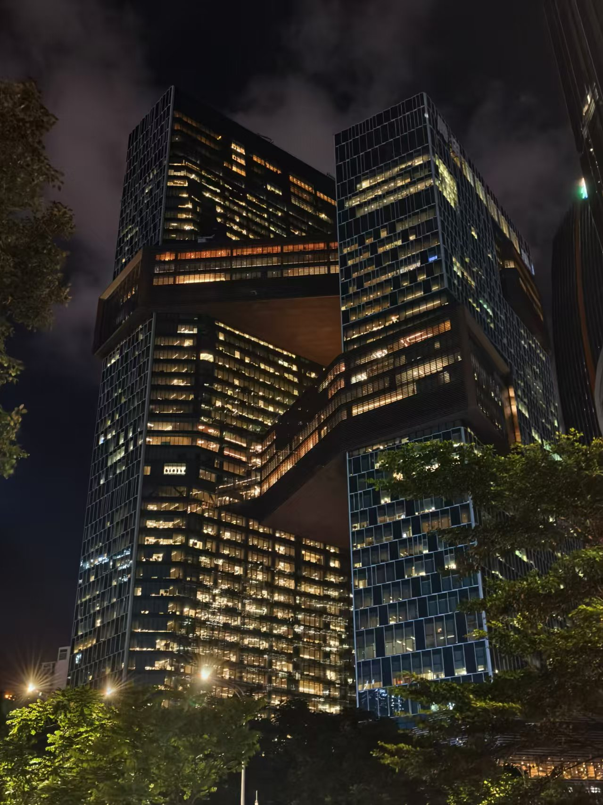
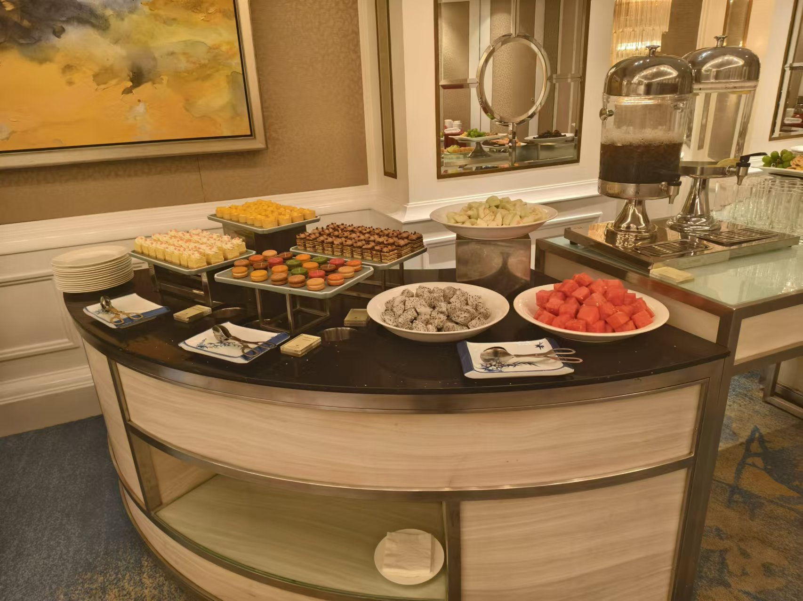
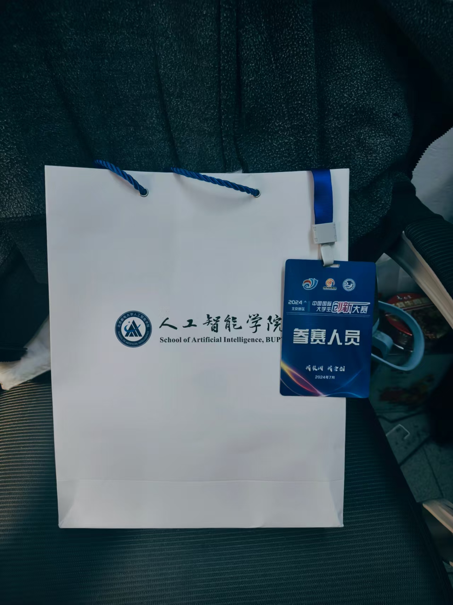

序
改编自《我的青春恋爱物语果然有问题》第一卷 序
歌颂青春者往往追求社会人之间的交互与共鸣，以积极态度面对生活的一切。在庆典上手挽着手、叫嚷着 “我们要组一辈子社团” 也好，在体育馆上挥洒汗水、因胜利而相拥庆祝也罢，都逃脱不掉与人交互的框架。
就算真的因为年少轻狂、和过去的同好们决裂了，他们也不认为这是自己的失败；相反，他们视其为青春的象征，刻画为记忆中的一页。他们从每分每秒的品行中挑选出值得批判的章节，正如同在菜市场上挑出被虫蛀的白菜一般，对其进行锋利而深刻的批判，从而彰显对方的失败。
正因如此，世界上到底存不存在失败的青春呢？失败的青春究竟值不值得歌颂呢？我认为，只要是与人交互的青春，那便不存在失败了，因为总能找得到 “替罪羊” 替自己的失败开脱；相反，若是真的想体验失败的、与众不同的青春，只能不依靠任何外人，自己想法子去寻了。
正因如此，结论就是：敬请见证吧，我那失败的青春物语！
第一章 自省、纯粹、老头环
一
一气呵成编排完上述段落，龟感到由衷的轻松。
他已经找到用来开脱的完美借口，不论其接下来几个月的保研生涯是如何之失败，他也不会叫唤一句怨言了。
当然，此刻蜷缩在深圳地铁一角的龟仍然是一副无比轻松与无聊的样子，无聊到决定通过日记的方式，将未来几个月的保研生活记录下来，以供朋友观赏 — — 但说到底，又有谁会来看他的博客呢？说不定只有未来的自己罢了。
大三下学期以来，龟仿佛干了很多事，又觉得这些事情也不值得单独一提：首先是龟做了两年的大创项目进了学校的大创展，但实打实的工作已经在寒假就完成了，凭借这些工作量获奖应该是顺理成章的事情；还套了大概二十多个导师，基本上感兴趣方向的导都套了，有一个东南导的线上面试、自动化所导的线下面试，加了人大导师的微信，以及套到了我未来的导。尽管如此，口头 offer 仍然是一个都没有。
但此时龟没想太多，他正赶着去和他在深大的朋友高宇见面，顺便蹭一顿饭吃。高宇和龟一样是保研人，但由于深圳大学神秘的课程安排，高宇大三下的课程贼多，并且期末考得贼晚，为此他已经放弃了不少夏令营了。
出了地铁站已是傍晚五六点了，可能是靠近赤道的影响，天并没有很黑。高宇正在不远处向龟走来，一个学期过去了，他还是这么唐。他们来到了之前说好的椰子鸡连锁店，落座后点了一份招牌的椰子鸡火锅，又开始各种闲扯。
随后来了一桌穿浙大文化衫的队伍，疑似我们一个共同的浙大朋友派来的间谍，我们都叫他盛婶。高宇说盛婶看不上之前港大找的导师，于是报了清深北深的夏令营。如果龟港中文上岸的话，那仨人就可以天天上香港团建了。
龟调侃自己来参加 CUHK 的提前批纯纯图一乐，刚考完期末就来参加面试，屁都没复习。然后问了问高宇的打算，他说南科大如果要他的话，大概率就去那儿，不然的话就接着待在深大了。龟问他有没有考虑预推免的时候再冲一波，他就打太极，说什么准备太久太累啥的，感觉就是一个懒比。
之后又聊了聊暑假回家的事情，不知如何又聊到我们的一位北航同学。他和高宇挺熟悉的，顺嘴问了一下，高宇说他已经面完清华等着面北大了。听到这句话心里咯噔一下，但后来想想也没啥好咯噔的：人家本来就在北航，往上跑也只能上清北了（笑）。这时候我才意识到，不论是高宇还是北航哥，似乎都是在用自己的方式，去和自己理想中的生活做对齐。生活没有优劣之分，遂心罢了。
扯了半天家常，椰子鸡终于吃上了，库库吃鸡，库库吃肉。一开始还觉得挺好吃的，结果火锅汤料煮久了，冒出了一股甜味。深圳美食主打的就是 “原汤化原食”，用椰子水做底料在那儿摁煮，最后那个咸咸的肉吃到嘴里，竟有一丝香甜的回甘，吃起来有点生理性不适。但是椰奶奶茶挺好喝，十六块钱也不贵，要是北京也有椰奶奶茶就好了。
最后见识了晚上八点的腾讯大厦，灯火通明。

二
晚上九点回到宾馆，在附近绕了半天路，深圳这个市政交通有点神奇的。之后一个人打了一晚上的老头环，没有复习、也没有看小红书。为明天坐牢埋下伏笔。
起床洗漱一下就下楼吃早饭了，此时刚刚八点，到便利店随手整个面包和饮料草草了事。心想着唉硬着头皮上吧，就往面试的酒店去了。酒店离得很近，上了三楼有两排凳子，八点半就已经有来面试的同学在等着了。我随便挑了个位置，刷了刷知乎经验贴，都说难度不大，感觉像是自我麻痹。
就在我看经验贴的时候，旁边有一个人突然拍了拍我的肩：同学，你是北邮的不？我一惊，刚想问你怎么认出来我是北邮的，才发现我穿着北邮文化衫，大雁拉屎的校徽给我暴露了。我说对啊，我果园的。他一边好好好，一边坐在我旁边。随即又陷入了一段沉默。
到了九点，我们被喊进去开始笔试。怎么评价呢，感觉考题确实很基础，但是覆盖面很大，有排列组合、有离散、有线代、有概率论、有数据结构、有操作系统。很多题换成是刚学过的我或许会做，现在的我纯裸考啥都不记得，知道概念就哐哐磕头了。于是只能一顿瞎写，摁是把答案编完了。
-
概率论一生之敌。有四个随机变量Xi独立同分布，问Pr(X1<X2 | X2<X3)的概率，我就在想这俩事件相互独立吗，我不到啊，反正就很纠结，最后运用俺寻思之力猜的独立，不懂；
-
主进程里连续调用n个进程，其最终会创建多少子进程？这题我只知道 fork 会创建一个进程，然后就没有深入想。考完试问了睿宁，感觉还是挺基础的。fork 之后，子进程会继续执行接下来没有执行的语句，因此可以画一个进程图，最后是2^n-1个。考试错了；
反正考完就感觉笔试已经烂完了，更烂的是那个北邮的老哥在我出来之后，告诉我小红书上面透了原题，而且透的大部分题都是我没拿准的题目。他还问我怎么不看，是我不想看吗？只能说我还是大意了，没有去宇宙社交平台小红书翻一翻有没有什么经验贴，这把确实是我打的有问题。
在等候室煎熬了一段时间，看看考试的错题，本来想向盛婶求助一下那道我不会的概率论，结果他说他也不会。最后，我被稀里糊涂地点到名字，稀里糊涂地走进面试的房间。
面试两个老师，我名字一个都没记得。一上来我先把简历给他们递了一份，问他们要不要，他们说我们有了，有点尴尬。之后就让我做英文自我介绍，这时候我还没把我的面试稿子背下来，于是就对着稿子嘎嘎念，念到最后我自己都不好意思，那俩老师就把我打断了。
然后开始最为经典的拷打：你一个学电子商务的，凭啥来我们CSE呢？这个回答我已经被问的滚瓜烂熟，嘟囔着不感兴趣啦想换方向啦学的东西差不多啦之类的东西就糊弄过去了。
然后那个老师接着问，你说你学过数据结构，那你能说说快排算法是啥吗。我说他就是每轮固定一个点，然后分成两个区间二分递归下去。结果老师对我说的二分什么东西有点困惑，又追问了一下，我连忙解释说不是用二分算法，而是将整个大区间分成两个小区间递归，然后还给他举了个例子，但不知道他有没有理解。然后他又问我快排具体是怎么做交换的，我又给他讲了讲，如果一个元素在他的左边且比他大、或者在他的右边且比他小就交换。
那个老师又问我一个傻卵DP题，一个人上n层阶梯，每次可以走一步或两步，问总方案数。我就给他讲了讲解题思路，结果他居然问我什么是 DP？
什么是 DP？这不禁让我陷入了对人生和宇宙的大思考。我心想我从小打信竞，至少写了十年 DP，从来没有人问过我 DP 的定义是什么。我就跟他随便扯了扯，告诉他我没法清楚给你表达出来，接着又是一段沉默。
这个老师看我没救了，就放弃了对我的询问，换成了另一个老师拷打我，他一上来就问了我那道我不会的概率论题，还让我写解题过程。我总不能跟他说我不会吧，我就随便瞎写了点过程，他一追问我就投降了，又是一段沉默。
然后他又问我知不知道复杂度是啥啊，我以为他又要拷打我什么算法的复杂度，结果他又开始拷打我复杂度的定义……可能是我实在过于摆烂了，他直接问我 O(logn) 和 O(n^logn) 哪个复杂度更优秀，这肯定前者更优秀啊（实际上我忘记他当时问我的是 larger，还是 better 了，反正我就回答了 the former，他点了点头）。于是对我的拷打就结束了。
我以为最后他会和我聊聊有没有要问他们的问题，但是没有，这可能就是给我默拒的前兆。
出来之后就挺痛苦的，感觉应该是寄了，后来吃饭了解到一共 700 个人报名了 CUHK 的提前批，线下挑了30个人面试，感觉还挺高兴的。只能说我确实菜，很遗憾没能让招生办的老师们尽兴。
面试出来之后，发现北邮那个老哥本来应该在我后边面试的，结果在我前边出来了。他跟我吐槽说，他搞得是通信和人机交互方向的，属于 EE 那边，结果导师说那你来我们 CSE 提前批干什么，随便聊了几句就打发走了。不是很懂，感觉比我还神秘。
三
最后 CUHK 还非常贴心地给学生们安排了一次午饭，每个桌子上都会坐几个导师，可以询问他们有关 CUHK 的问题。我们这个桌子上坐了两个导师，其中一个是普通路过的负责整个招生组的教授，感觉挺开朗的一个导。他跟我们讲了讲港中文招生的理念，然后说这个考试只是一次十分基础的摸底考，只要能有他们 CS 学生的基础水平都给过（感觉我没有 CS 基础水平）。
之后，他又和我们谈起了 CUHK、或者他个人的一些科研理想。他讲现在读研读博的都太“卷”了，都在争着发A刊，看谁发的多谁就牛逼，但真正有科研深度的文章却很少。他希望我们能在毕业的时候都能想一想，比起读研读博之前，自己是否在科研以及学业上 study deeper 了，尽管 study deeper 可能会让你发不了很多 paper，但这也是某种学术上的 trade-off，希望我们可以在学术上做一个更加纯粹的人。与诸君共勉。
自助餐真好吃，哐哐炫！炫完之后又整了一杯咖啡，边喝边和北邮老哥聊一聊他的安排。他说会再住一晚上，把他的大作业肝完，于是和他加了个微信就坐飞机回京了。
没过几天，CUHK 就给我发了邮件，果然没要我，但也无所谓了。总言而之，这时候的龟仍旧憧憬着幻想的未来，他的夏日大作战开始了。
p.s. 想打老头环。

第二章 努力、未来、空洞感
一
要论天赋派和努力派，龟一直是坚定的努力派信仰者。龟认为所有的成就都要通过不懈的努力才能获得的，没有努力办不到的事。即便上了大学，见识到了许多拼爹拼圈子的场景，龟对努力派的信仰也是不减反增。没有圈子就靠实力创造圈子！没有爹就靠努力创造爹！
虽然有夸张成分，但龟也确实是凭着自己的努力考到了专业第一、到处找了实习科研，才有了如今参加保研的底气。
但是自从夏令营开始，龟对努力派的信仰产生了一丝动摇。时间已来到了七月上旬，龟几乎报了所有他认为比北邮强的学校（当然也报了北邮本校）的夏令营，但实际中入营的也寥寥无几 — — 事实上，除了“海王营”浙软点击即送以外，龟就没有其他营了。
更小丑的是，龟认为自己套磁了自动化所导师之后，就能稳进自动化所夏令营，因此已经开始在网上搜索各种面经在准备了。事实上，最终龟也没能入自所的营。
于是没事干的龟便旁听浙软夏令营，他们安排先办一个礼拜讲座，然后选择导师去进行各自的考核。龟之前就邮件联系了个不错的导，是浙计张老师，也在浙软招生，不出意外的话龟最后就报他的研究生了。
比较抽象的是浙软开幕式给人一种官僚主义浓厚的味道，绿群也一直在唱衰浙软，锐评道“就业不如留北邮”，这让想去浙软的龟非常慌。还好龟的高中同桌兼大学校友睿宁评价道：“大火都是臭鱼烂虾，还搁着装模作样地挑挑拣拣的多少有点没看清自己了。” 想想骂得在理。
二
自从深圳回来之后，龟便抛弃了一贯的健(J)康(K)作息。昨天晚上不知道干点啥，于是龟去看了场电影，打老头环打到一点半，第二天早上十点才起的床。
龟觉得自己很不对劲，非常想让自己紧张起来，为保研面试多做准备，但保研面试又不像期末考试，有个明确考纲或者考试范围啥的让你背。完全不知道应该怎么努力、往哪儿努力、努力些什么。
龟的努力学大厦逐渐倾塌了。
起床后他随手刷了刷绿群，全国最大的CS保研交流群，得知了上交电院和北航CS夏令营都已经公布入选学员名单了。龟上官网一看，没有自己。
之后，龟继续打老头环打到下午两点，开始一边听浙软讲座、一边随性地看看复习资料，填补一些内心的空洞。随后龟找教务打印一些材料，看见办公室中工作的学姐学长、看见暑假留校打工的苦逼研究生们，寻思道：“反正最后都是在社会讨生活，在泥土中融化，在哪儿打工不是打工呢？为何一定要纠结一个更好的去处呢？”
但是龟花了三年时间卷到了专业第一，现在却告诉我不如脱下长衫、随便找个班上，这真的忍心吗？
此时此刻，港中文发来了选拔失败的邮件。龟深知自己毫无准备，但是凭底子干不过其他人，也让龟有了 “至今为止的努力全部木大” 的空洞感。
正当龟想着 “难道我真就一无是处吗” 的时候，手里抓着的文件夹随着一阵强风散落，刚盖好章的文件压抑地锤在地上，溅起了污秽的泥。
你看，连打印材料这点小事都做不好。
哈哈，破防了。
自锁也开了，没我。
学校邮箱就没收到过一篇入营通知。
破防了破防了破防了。
三
又过了几天，龟收到了北邮 AI 院的夏令营入营通知，这是他几周以来收到的第二个夏令营入营通知。如果北邮 AI 院都不让入营的话，那就可以从学六的四楼跳了，龟如是想着。
龟吃了几周以来的第一顿早饭，上午去听了北邮AI的宣讲。非常无聊，各组轮番上来念 ppt，看到了很多熟悉的身影。
龟之前一直在AI院王老师的课题组实习（8个月），因此夏令营也报的是这个老师的方向。下午去了王老师的办公室，听他们实验室的宣讲。其实就是喊了一个毕业工作的学长回来分享一些工业上的经验，听来听去无非就是想传递 “工作好痛苦” 之类的话。
之后，龟实习跟着的学长上台，把他参与的论文讲了一遍，然而论文三作在底下还要参加夏令营考核，令人唏嘘。
实验室宣讲之后过了几个小时，考核任务就下来了。看到任务的龟当时冷汗一冒：不是说只要阅读论文就行了吗！？怎么还要复现代码！？
没办法啊，那开干吧！
于是，看一晚上论文去了。
于是，恐怖的一周开始了。

第三章 死亡、追求、多巴胺
一
2024年的7月7日至15日，龟度过了大学三年以来最为充实的一周暑假。他在一周之内连续完成了两个夏令营（北邮ai院和浙大软件学院）的考核。时至今日，龟都不知道这一周是什么支撑着他没似的。是对读书的渴求吗、是对生命的渴求吗？
实际上当归看到北邮AI夏令营考核内容的一瞬间，就觉得估计大概要完蛋了，但为了这仅有的保底offer，龟还是没有放弃。
龟大概花了一天半的时间弄明白这两篇论文讲了怎么个事儿，就是多模态工作中需要把不同模态的知识映射到同一个空间，A 论文提出了一个损失函数，B 论文提出了对抗学习方法。考核要求把这两个论文的方法结合起来，给定的只有一个简单的实验框架，大部分代码都要自己写。
其中这个对抗学习方法，我以前只是听说过有 GAN 这么一回事，结果他让我在一个礼拜内复现一个差不多的出来，我：？？？
打开VSCode，我突然发现我其实还不会pytorch，我：？？？
那咋办啊，学吧！于是我参考他给的论文和代码，速通了一下模型训练需要哪些个组件，然后怎么写模型模块，怎么调用损失函数这类的，陆陆续续花了我好几天。结果论文复现还是没搞明白。真想死了。
关键是我没有什么人能讨论，找同学肯定不现实了，我认识 AI 院有水平的除了实验室带我的学长也只有漫社的 Rua 学长了。于是厚脸皮找 Rua，问他能不能帮帮忙，他喊我去他宿舍。他们宿舍空调还坏了，Rua 赤裸上身坐在床边，很涩。
我两三句话给他讲了一下论文算法，然后给他把我写的代码又讲了一遍。感觉他听懂了，并且他也大受震撼。
在 Rua 的指导下，龟尝试了些神秘的训练技巧（好像有一次效果真挺好，但是忘了怎么调出来的了）。最后在和他的讨论中，我突然自己想出来模型的一种写法了。当时觉得自己贼牛逼，Rua 也觉得很牛逼，但后来感觉那个策略是错的……
反正调了几版模型，效果都很烂。但没办法啊，时间来不及了，只能开始写论文阅读报告以及实验报告。 当时就一边写报告，一边调参训模型，希望模型结果能更好一点。
最后报告写完了，模型还是训得像坨史，很难受。当时报告是最后一天就要交了，龟实在受不了，又去找了科研实习的学长跪求帮忙。但人家对这个也不熟啊，所以他就针对报告里写的东西，给了几点建议，其中有一条是让龟再关注一下损失函数和论文中的是否一致。
龟仔细一想，这个损失函数好像确实不太一致，给龟整慌了，连夜修改重训模型。结果发现还真的有用！虽然结果还是史，但这个史至少看上去没有那么烂了，可以说和原模型 “具有竞争力” 了。
只能说训模型方面的经验还是少了，很多坑都踩得比较青涩。但这也是龟在一个礼拜内能搞出来最好的东西了。这一个礼拜龟几乎没干什么别的事，一天至少有十个小时在搞论文复现，AutoDL 上至少烧了一百多块钱。只能说，唉…… 真想有个 offer、真想有个学上。
二
一刻也没有为提交的考核报告而感到哀悼，立刻赶来的是——线下汇报！
此时此刻，龟对于北邮AI夏令营考核的完成度还是很满意的，训了很多版模型，也尝试了很多调参策略，对于表现不佳的任务也准备了很多话术，反正自我感觉良好。
来到面试的会议室，里边儿有课题组的三个老师，龟之前联系的王老师也在。龟觉得都跟你做了好几个月项目了，发个 offer 应该问题不大吧？抱着这样的想法，龟开始了他的答辩报告。
总体来说，龟的报告还是挺顺利的，之前也练习了很多次，感觉没啥问题。正当龟觉得胜利号角即将吹响之时，问答环节开始，王老师只用一个问题直接击穿了龟破碎的心：王老师从论文几百条句子中挑出了一条，问这个句子中的术语是什么意思。
我直接黑人问号？？？问答环节难道不是应该问做实验的一些细节吗，逮着论文问细节是何意啊？关键是那个概念我看论文的时候就没看懂，百度了也没搜到，百度都搜不到的东西你让我怎么给你做解释呢？
之后王老师又问了几个问题，电波和我都对不上，给我整破防了。换了另一个老师问我，还是问在论文，就和论文杠上了是吧，你们倒是问问我花了一个礼拜通宵做的实验啊！？
反正啊呜啊呜了一通，答辩依托史。老师看我没活了，就让我滚蛋了。
哈哈。
三
其实这周一二的时候，浙软夏令营我填报的那个 Z 导师也发来了考核通知，而且挺亲民：他给了一个论文的列表，要求从里边选任意篇阅读，做一个十分钟的论文阅读答辩。这个比起论文复现不是简单多了？
这个贼长的论文清单看似很可怕，其实你考虑到汇报只有十分钟，那其实顶多就讲两篇论文。所以龟准备浙软的夏令营其实满打满算也就两天半时间，在跑实验的间隙挑了两三篇RAG的论文读了读，写了点阅读手稿，最后半天里根据手稿糊成了超简易PPT，然后简单地练了两下，就进腾讯会议答辩了。
进了会议室，感觉 Z 老师开场就对我不太客气，可能是因为我背景太差了，所以有一种催人命的感觉让我快点讲完，收拾东西滚蛋的感觉。于是我就开始讲了，自认为讲的还可以，只在一个地方稍有卡顿，最后好像超了一丢丢时间讲完了两篇论文。
到了问答环节，Z 老师首先看我在汇报的最后提出了这几篇论文的若干不足，问我会怎么改进，前两个我答出来了，最后一个我没想出来，其实感觉可以随便口胡一个数据结构啥的骗一骗他，但其实无所谓。
然后是问我什么把 KG 展平拼接在 prompt 里有什么劣势，我心里想着大哥你自己都把答案说了我还说些啥。他又问我如果给你一万张a100，问我想做什么。我心想这什么鬼问题，跟他讲可能会做一些模型基座相关的任务。他怼我说是个人都会这么讲，那具体做什么内容的。我就跟他说现在大模型都是基于 Transformer 架构，我想尝试一些其他架构的大模型看看效果如何。
他问我具体有什么其他架构，我就给他口胡了一个 rwkv，其实我也不知道 rwkv 具体运作原理是什么，只知道好像是有一些人在吹它的架构。简单跟他讲讲 rwkv 是将 rnn 和 Transformer 结合在一起的架构就完了。
这两天他妈的睡觉不超过六个小时，感觉自己健康得要死，下午彩排的时候说话喘不上气，大脑直缺氧。结果就是北邮做了一个礼拜的项目还不如我浙软两天糊出来的报告表现得好，给我整大破防。就是不知道结果会怎样，god bless 了。
令龟自己也没想到的是，这只是未来几个月的痛苦之起始……
To Be Continued…